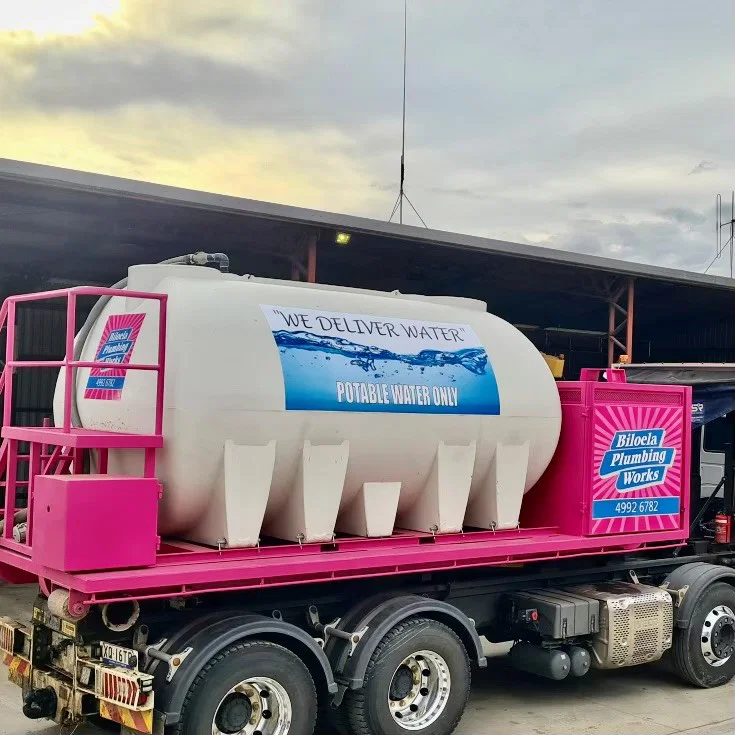

Potable water is purchased through the Banana Shire potable water
standpipe and carted directly to delivery location.
The potable water tanks are licensed under the BSC Food
Business Licence annually to meet compliance.